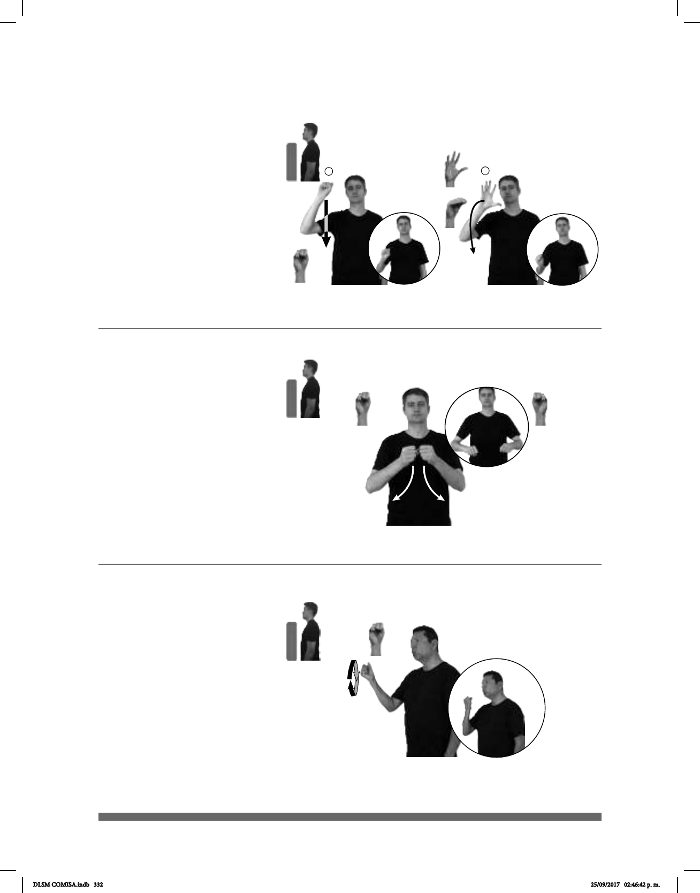

332
(S-115)
Seña: SC: I. y II. SM
I. S.1; II. Seña que
pasa de 5.2 a O.9
I. y II. Palma hacia
fuera.
I. y II. De la cabeza al
pecho.
I. Recto; II. La mano
se mueve formando el número
siete.
Simula la forma
del continente africano.
País ubicado en el sur
de África cuyas capitales son
Pretoria, Ciudad del Cabo y
Bloemfontein.
1
2
dm-ALICIA YA VIAJAR SUDÁFRICA
Alicia viajó a Sudáfrica.
Seña: SS
S.1
Las palmas se
encuentran frente a frente.
A la altura del pecho.
Las manos parten de
un mismo punto y luego se abren
hacia abajo.
sust. m. Padre del
cónyuge de una persona.
_______muy_
pos-MI SUEGRO
izquierda
TRABAJO++
Mi suegro es muy trabajador.
(S-116)
Seña: SM
S.1
Palma oblicua hacia
abajo y hacia la izquierda.
A la altura del hombro.
La mano se mueve
formando círculos repetidamente.
Labios
redondeados cerrados.
sust. f. Circunstancia de
ser, por mera casualidad, favorable o
adverso a alguien o algo lo que ocurre
o sucede.
pro-TÚ SUERTE OJALÁ
Deseo que tengas mucha suerte.
(S-117)
DLSM COMISA.indb 332 25/09/2017 02:46:42 p. m.